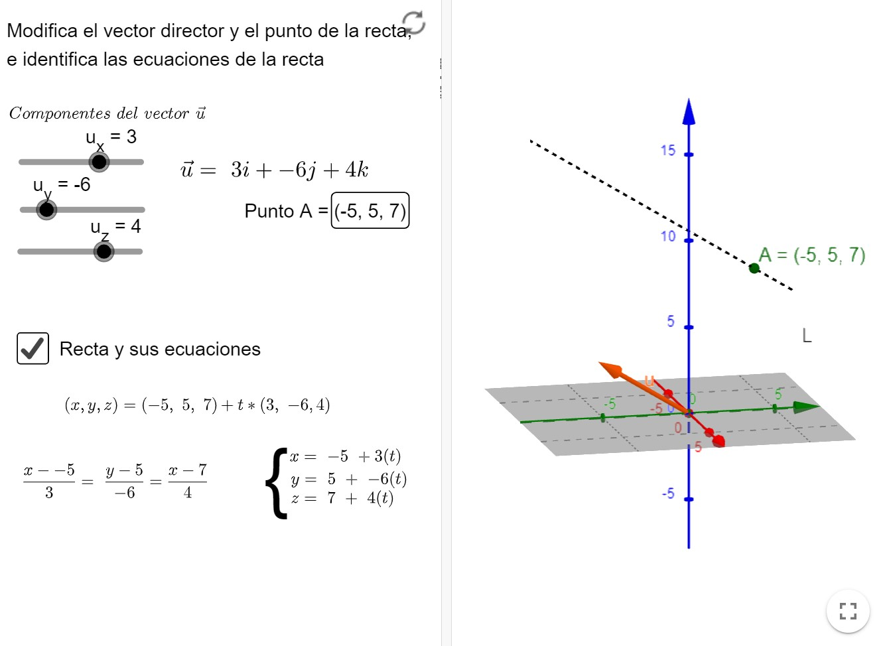
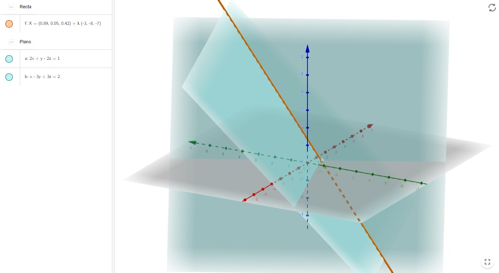

Rectas y planos en el espacio 3D
Contents
1.6. Rectas y planos en el espacio 3D#
En esta sección veremos cómo definir correctamente las rectas en el espacio tridimensional y cómo representarlas con Python.
1.6.1. Rectas en el espacio#
Asumimos que conocéis a fondo las distintas maneras de escribir una recta en el plano. Si tenéis alguna duda, por favor, echad un vistazo, por ejemplo, aquí: https://www.vadenumeros.es/cuarto/ecuaciones-de-la-recta-en-el-plano.htm
Nosotros nos centraremos en la descripción de una recta en el espacio. En este caso, hay distintas maneras de describir una recta.
Las primeras maneras vienen del hecho de que podemos describir una recta si conocemos un punto en ella, \(P = (a,b,c)\), en esa recta y uno de sus vectores directores, \(\mathbf{v}=\left(v_{1},v_{2},v_{3}\right)\) (hay infinitos vectores directores, porque todos los múltiplos de \(\mathbf{v}\) valen). Entonces podemos definir:
La ecuación vectorial de la recta:
Un punto \(P=(x,y,z)\) está en la recta \(L\), paralela al vector \(\mathbf{v}=\left(v_{1},v_{2},v_{3}\right)\) y que pasa por el punto \(P=(a,b,c)\), si existe algún valor \(t\in\mathbb{R}\) tal que
\[ P = A + t\mathbf{v}. \]Equivalentemente, si nos fijamos en sus coordenadas, de la ecuación anterior obtenemos las ecuaciones paramétricas de la recta:
\[\begin{split} \left\{\begin{array}{l} \displaystyle x = a + t v_{1} \\ \displaystyle y = b + t v_{2} \\ \displaystyle z = c + t v_{3} \end{array}\right. \end{split}\]Si las componentes \(v_{1}\), \(v_{2}\) y \(v_{3}\) del vector de dirección son todas distintas de \(0\), podemos despejar \(t\) en estas ecuaciones e igualar para obtener las ecuaciones continuas de la recta:
\[ \frac{x-a}{v_{1}} = \frac{y-b}{v_{2}} = \frac{z-c}{v_{3}}. \]La siguiente imagen, extraída de la aplicación de Geogebra creada por Allan Avendaño y que podéis consultar aquí: https://www.geogebra.org/m/Ght27Hfp, corresponde a estas tres descripciones de la recta:
La última manera de representar una recta en el espacio que vamos a ver parte de una idea diferente: podemos entender una recta como la intersección de dos planos. Aparecen las llamadas ecuaciones implícitas de la recta:
\[\begin{split} \left\{ \begin{array}{l} \displaystyle A_{1}x+B_{1}y+C_{1}z = D_{1} \\ \displaystyle A_{2}x+B_{2}y+C_{2}z = D_{2} \end{array}\right. \end{split}\]La siguiente imagen, extraída de la aplicación de Geogebra creada por Daniel Partal García y que podéis consultar aquí:https://www.geogebra.org/m/WkdKpkYN, corresponde a esta última descripción de la recta:

{kind=link}
{kind=link}
1.6.2. Script para graficar una recta en Python#
Mostramos ahora un pequeño script en Python para la graficación de una recta utilizando sus ecuaciones paramétricas:
from mpl_toolkits import mplot3d
import numpy as np
import matplotlib.pyplot as plt
# Para tener la recta necesitamos un punto, P, y un vector director, v
P = np.array([-5, 5, 7])
v = np.array([3, -6, 4])
# Inicialización de la representación 3D
fig = plt.figure()
ax = fig.add_subplot(111, projection='3d')
t = np.linspace(-5, 5, 100)
x = P[0] + t*v[0]
y = P[1] + t*v[1]
z = P[2] + t*v[2]
# Pintamos, en rojo, el vector director sobre el punto P
ax.quiver(P[0], P[1], P[2], v[0], v[1], v[2], color=['r','r','r'])
# Añadimos etiquetas para P y para v
ax.text( P[0], P[1], P[2], 'P', fontsize=12, color='k')
ax.text( P[0]+v[0]/2, P[1]+v[1]/2, P[2]+v[2]/2, 'v', fontsize=12, color='r')
# Pintamos la recta
ax.plot3D(x, y, z)
# Ajuste de los límites de los ejes
ax.set_xlim([-15,1])
ax.set_ylim([-5,5])
ax.set_zlim([-1,10])
# Etiquetas de los ejes
ax.set_xlabel('x')
ax.set_ylabel('y')
ax.set_zlabel('z')
# Orientamos los ejes
ax.azim = 60
ax.elev = 20
plt.show()
1.6.3. Ecuaciones de la recta: más información#
Aquí podéis encontrar más información:
En la fantástica página matematicasonline: https://www.matematicasonline.es/pdf/Temas/2BachCT/Ecuaciones de la recta y el plano en el espacio.pdf
En vadenumeros: https://www.vadenumeros.es/segundo/ecuaciones-de-la-recta.htm
Etc..